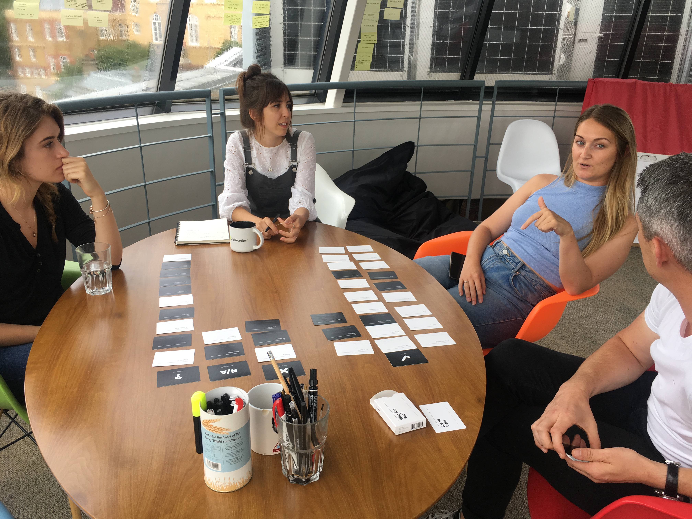
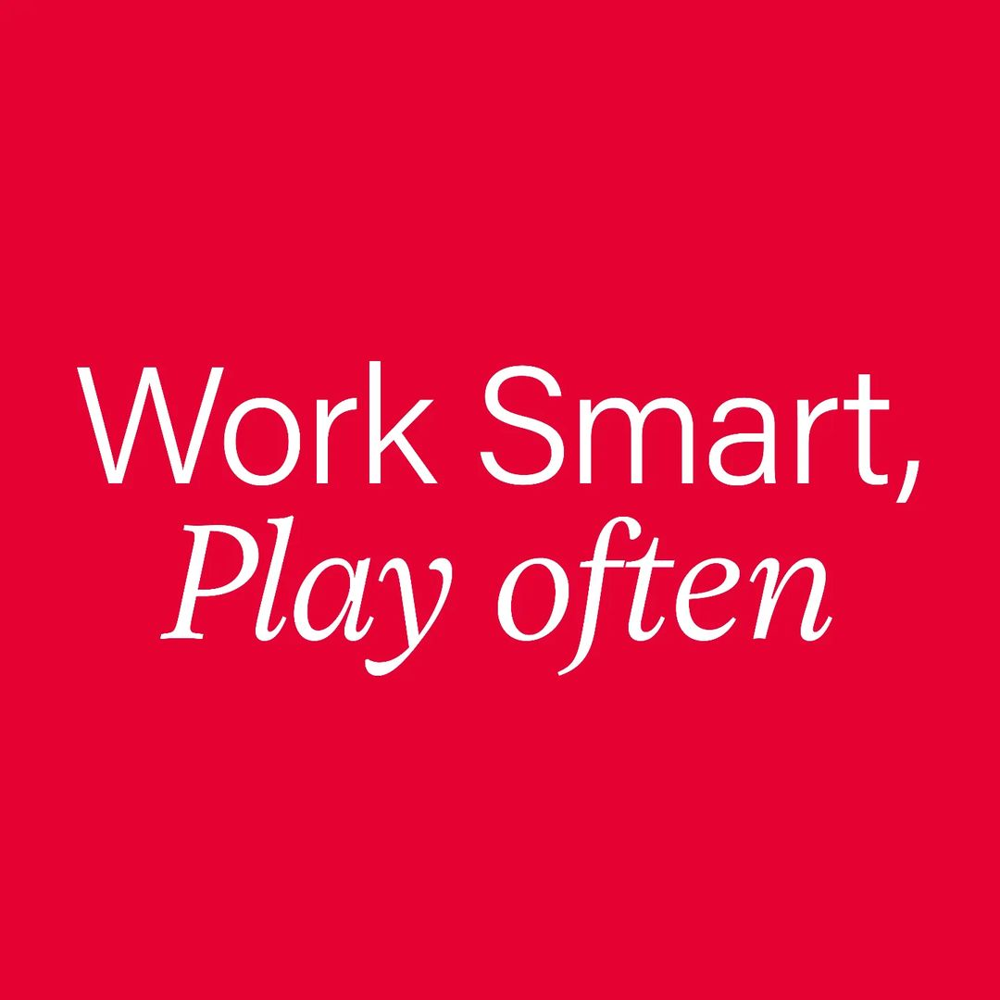
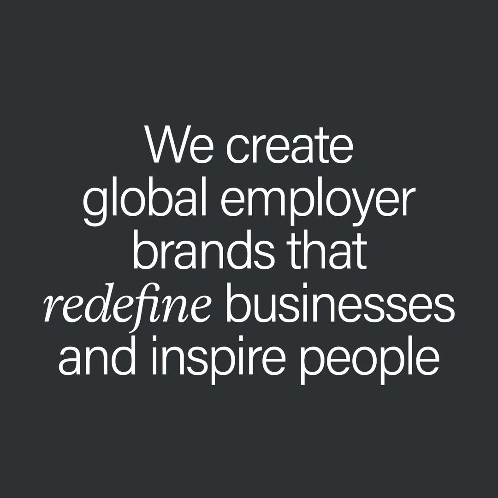
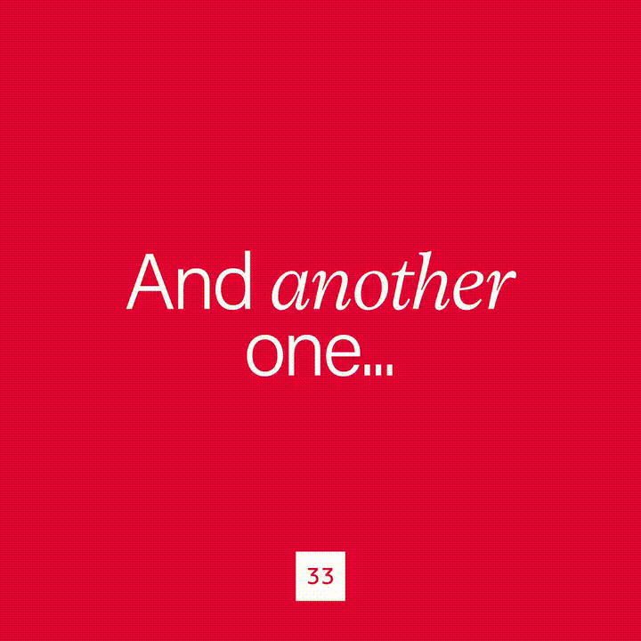
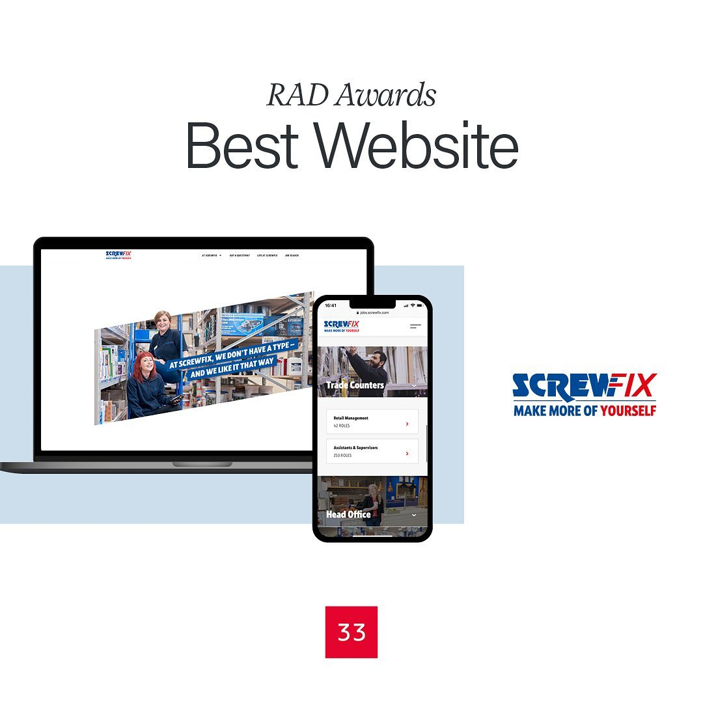
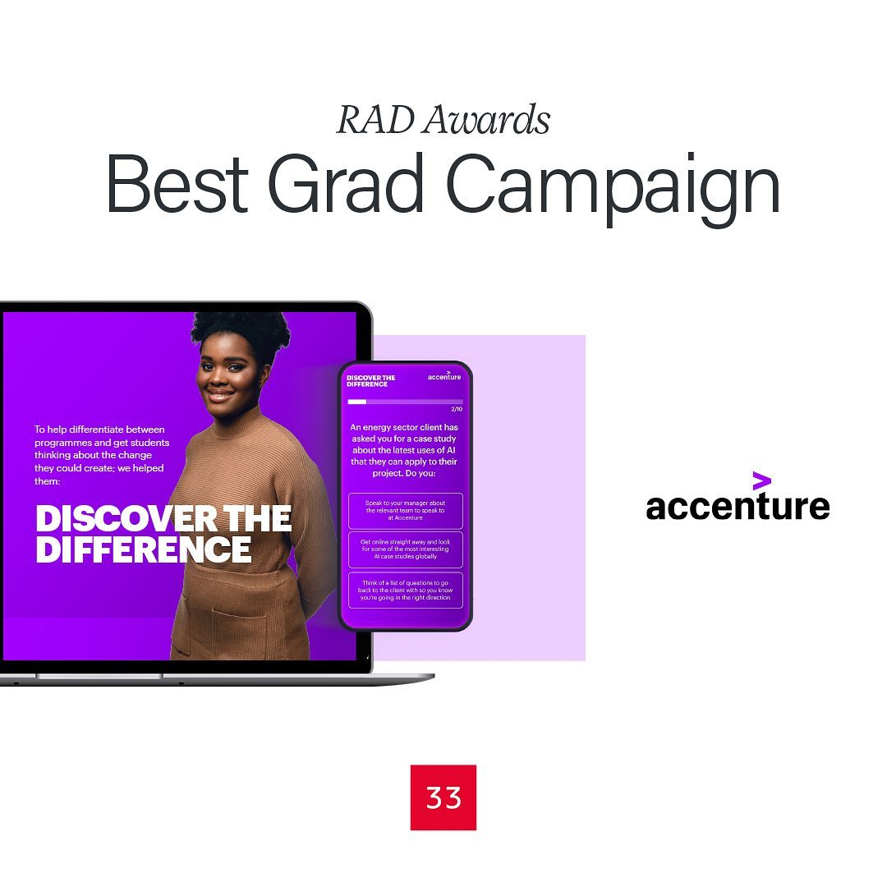
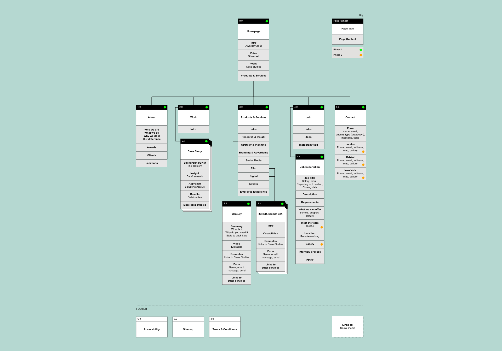
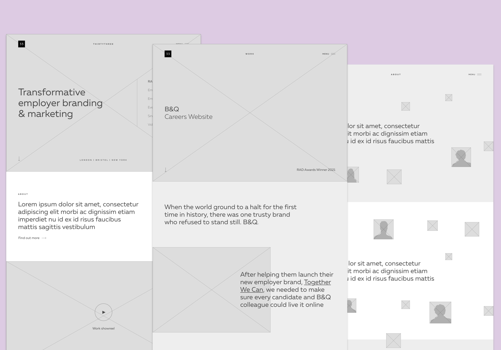
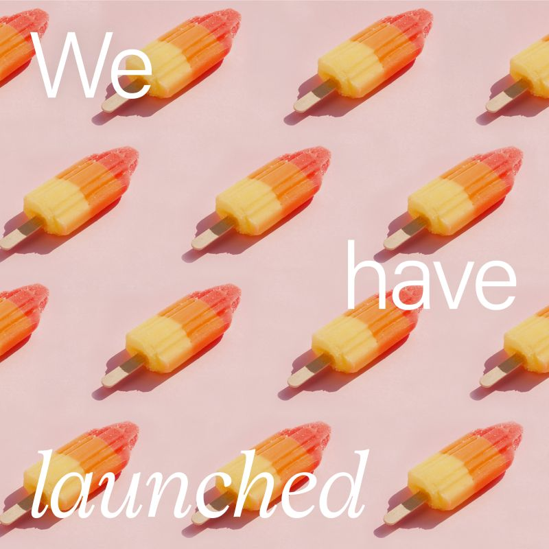
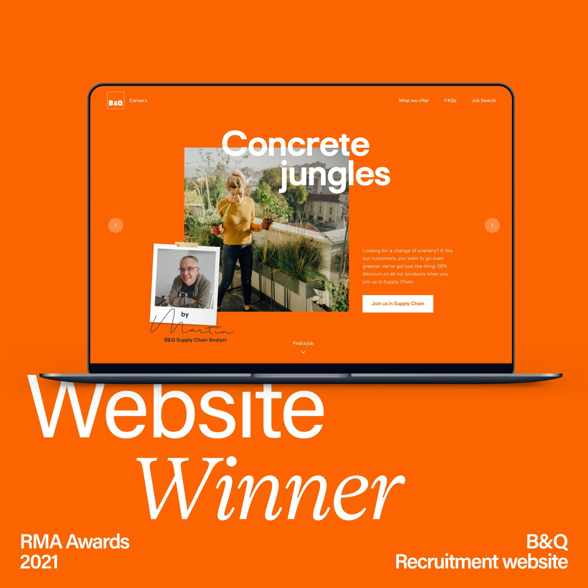

BRAND IDENTITY & WEBSITE DESIGN – UX, UI
ThirtyThree
The brief
ThirtyThree is a full-service agency with offices in London, New York, and Bristol. Known for its bold, high-energy, and creative team, the agency hadn’t updated its brand identity or website in over five years — and the image it was projecting no longer reflected who we had become.
As a Senior Designer at ThirtyThree, I led the strategy and execution for the website redesign — a project I was trusted to own from vision through to delivery. Like many internal projects, it came with its fair share of challenges, from securing leadership buy-in and aligning stakeholders to maintaining momentum through regular communication across the organisation. Balancing these demands while staying on time and within budget wasn’t easy, but I’m proud to say we pulled it off.
We kicked things off with a solid round of research — from analysing competitors and our target audience to gathering insights from internal teams and stakeholders. We needed to understand how the agency had evolved and where it now sat in the market. To spark meaningful conversations and get everyone engaged, we used a set of Branding Decks — a surprisingly fun and effective way to bring people together and uncover shared vision.
As a Senior Designer at ThirtyThree, I led the strategy and execution for the website redesign — a project I was trusted to own from vision through to delivery. Like many internal projects, it came with its fair share of challenges, from securing leadership buy-in and aligning stakeholders to maintaining momentum through regular communication across the organisation. Balancing these demands while staying on time and within budget wasn’t easy, but I’m proud to say we pulled it off.
We kicked things off with a solid round of research — from analysing competitors and our target audience to gathering insights from internal teams and stakeholders. We needed to understand how the agency had evolved and where it now sat in the market. To spark meaningful conversations and get everyone engaged, we used a set of Branding Decks — a surprisingly fun and effective way to bring people together and uncover shared vision.


A new look & feel
We took a bold, Scandi-inspired approach to evolve the agency’s existing visual style — refining it into something more modern and distinctive. The design leaned heavily on typography, with clean lines and a geometric layout that gave everything a crisp, structured feel.
Working with the original brand palette, I made slight adjustments to enhance how the colours appeared on screen and introduced a complementary set of pastel tones to expand our range. After a bit of trial and error, we landed on Acumin Pro as the new typeface and built out a style guide that would shape everything from the website to our social presence.
Since this all took place during the pandemic, organising a team photoshoot wasn’t possible. We explored various alternatives — from stock imagery to employee selfies — but none really captured the agency’s energy. In the end, we embraced a more playful solution: emojis. They brought a sense of personality, humour, and modernity to the brand.
Since this all took place during the pandemic, organising a team photoshoot wasn’t possible. We explored various alternatives — from stock imagery to employee selfies — but none really captured the agency’s energy. In the end, we embraced a more playful solution: emojis. They brought a sense of personality, humour, and modernity to the brand.







The website
After gathering insights, we developed user personas and flows to better understand our audience’s needs and pain points. With a focused set of content themes in hand, we ran card-sorting sessions with the team to help shape the site’s information architecture. About six iterations later, we landed on the sitemap you see below and shifted our attention to wireframes.
The biggest change during the years between the old and new site? We’d created some truly amazing work — and we hadn’t done enough to showcase it. So this time, we made our project pages the heart of the site, bringing them to life with striking visuals and eye-catching animations.
The biggest change during the years between the old and new site? We’d created some truly amazing work — and we hadn’t done enough to showcase it. So this time, we made our project pages the heart of the site, bringing them to life with striking visuals and eye-catching animations.




Development and launch
We wanted the new website to be easy to update with fresh content over time, so we designed a flexible system of reusable components that could be mixed and matched directly within the CMS. Following a mobile-first approach, we used an 8pt grid system — essential for scaling the large volume of assets consistently across all screen sizes. It gave us a solid, flexible framework while still allowing for creative expression and visual play.
To streamline the handoff, I provided motion references early on and prototyped key user flows. I also collaborated closely with the development team to ensure the visuals and animations were implemented exactly as intended.
To streamline the handoff, I provided motion references early on and prototyped key user flows. I also collaborated closely with the development team to ensure the visuals and animations were implemented exactly as intended.




Role Lead Digital Designer
Responsibilities Full rebrand & art direction, end-to-end website design (discovery, design and prototyping)
Launch date 2022
Responsibilities Full rebrand & art direction, end-to-end website design (discovery, design and prototyping)
Launch date 2022